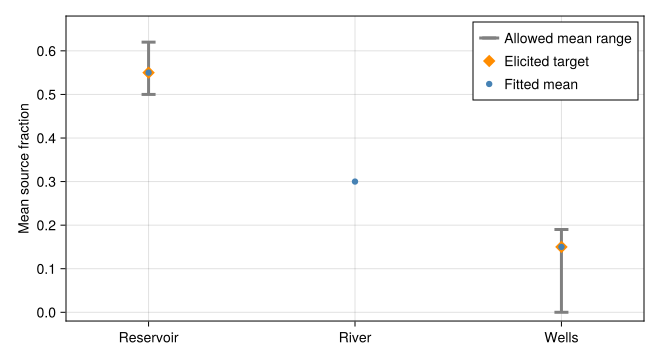
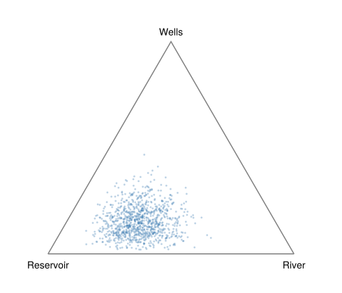

Elicit water-source fractions
A treatment plant receives water from a reservoir, a river, and wells. The three source fractions sum to one. Staff give bounds on expected fractions for the reservoir and the wells, and estimate the spread of the reservoir fraction.
using Credence, Distributions, Optimization, OptimizationOptimJL, Randomusing CairoMakieusing VarNames: @vnimport ForwardDiffbeliefs = ( :shares => ( Hard(:mean_bounds, Mean(), Between([0.5, nothing, nothing], [0.62, nothing, 0.19])), Approximate(:means, Mean(), [0.55, nothing, 0.15]; scale=0.04), ), @vn(shares[1]) => (Approximate(:spread, Std(), 0.10; scale=0.04),),)candidates = ( :shares => (:dirichlet => DirichletFamily(3; starts=(log_alpha=log.([11.0, 6.0, 3.0]),)),),)(:shares => (:dirichlet => DirichletFamily{Nothing, Nothing, @NamedTuple{log_alpha::Vector{Float64}}}(3, nothing, nothing, (log_alpha = [2.3978952727983707, 1.791759469228055, 1.0986122886681098],)),),)nothing leaves that element unspecified. The simplex fixes the river mean once the other means are fitted. The target for the reservoir's standard deviation informs the Dirichlet concentration.
problem = Elicitation(beliefs, candidates)report = fit( Xoshiro(401), problem, IPNewton(); adtype=Optimization.AutoForwardDiff(), maxiters=1000,)validation = validate(Xoshiro(402), report)validation| Candidate | Belief | Judgment | Estimate | Evidence | Status |
|---|---|---|---|---|---|
| shares / dirichlet #1 | shares / mean_bounds | [[0.5, —, —], [0.62, —, 0.19]] | [0.55, 0.3, 0.15] | analytic | satisfied |
| shares / dirichlet #1 | shares / means | ≈ [0.55, —, 0.15] | [0.55, 0.3, 0.15] | analytic | target |
| shares / dirichlet #1 | shares[1] / spread | ≈ 0.1 | 0.1 | analytic | target |
The fitted means can be compared with the elicited targets and bounds. The river mean follows from the sum-to-one constraint.
mkpath("elicitation-output")source_names = ["Reservoir", "River", "Wells"]summary = belief_summary(validation)mean_bounds = only(row for row in summary if last(row.belief_id) == :mean_bounds)mean_targets = only(row for row in summary if last(row.belief_id) == :means)lower, upper = mean_bounds.targetmeans = Figure(; size=(660, 360))axis = Axis(means[1, 1]; ylabel="Mean source fraction", xticks=(1:3, source_names))rangebars!( axis, [1, 3], Float64[lower[1], 0], Float64[upper[1], upper[3]]; color=:gray, linewidth=3, whiskerwidth=14, label="Allowed mean range",)scatter!( axis, [1, 3], Float64[mean_targets.target[1], mean_targets.target[3]]; marker=:diamond, color=:darkorange, markersize=14, label="Elicited target",)scatter!(axis, 1:3, mean_bounds.value; color=:steelblue, label="Fitted mean")xlims!(axis, 0.6, 3.4)ylims!(axis, -0.02, 0.68)axislegend(axis; position=:rt)save("elicitation-output/water-means.svg", means)CairoMakie.Screen{SVG}

Review the implied means and spread before selecting the joint prior.
choice = select( report, :shares, (:dirichlet, 1); validation, rationale="The fitted fractions satisfy the mean bounds and match the reservoir spread.",)rand(Xoshiro(403), measure(choice)^4)4-element ArraysOfArrays.ArrayOfSimilarArrays{Float64, 1, 1, Matrix{Float64}, SubArray{Float64, 1, Matrix{Float64}, Tuple{Base.Slice{Base.OneTo{Int64}}, Int64}, true}}:
[0.516269914454555, 0.308988873279249, 0.174741212266196]
[0.5984966389900321, 0.3171475867317488, 0.08435577427821911]
[0.5682951959416965, 0.3196077268596435, 0.1120970771986599]
[0.6759694180064718, 0.1809891912666945, 0.14304139072683367]The triangle shows 1,000 draws from the joint prior. Each vertex represents all flow coming from one source. Moving toward a vertex increases its fraction.
draws = rand(Xoshiro(404), measure(choice)^1000)height = sqrt(3) / 2simplex = Figure(; size=(490, 420))axis = Axis(simplex[1, 1]; aspect=DataAspect())lines!(axis, [0, 1, 0.5, 0], [0, 0, height, 0]; color=:gray)scatter!( axis, [p[2]+p[3]/2 for p in draws], [height*p[3] for p in draws]; color=(:steelblue, 0.35), markersize=4,)text!( axis, [0, 1, 0.5], [-0.045, -0.045, height+0.04]; text=source_names, align=(:center, :center),)hidedecorations!(axis)hidespines!(axis)xlims!(axis, -0.15, 1.15)ylims!(axis, -0.08, height+0.09)save("elicitation-output/water-simplex.svg", simplex)CairoMakie.Screen{SVG}
